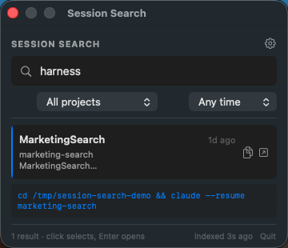
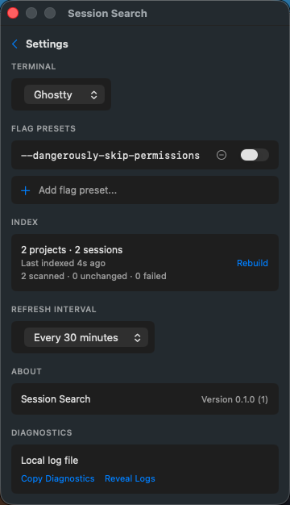
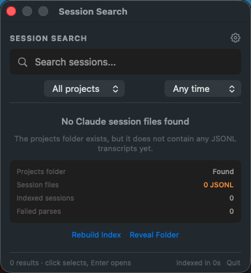

Full-text search for Claude Code sessions.
Find the exact prior conversation by keyword, inspect the matching snippet, and resume it from the macOS menu bar.
macOS 13.0+ · Terminal.app, iTerm2, and Ghostty · indexes local Claude Code transcripts

Built for finding the thing you remember.
Conversation search
SQLite FTS5 indexes Claude Code JSONL transcripts so mid-conversation terms are searchable.
Fast resume flow
Open the selected session with Enter, double-click, or copy the generated resume command.
Terminal choice
Launch resumed sessions in Terminal.app, iTerm2, or Ghostty with optional CLI flag presets.
Useful snippets
Results show project names, relative timestamps, and highlighted keyword context.
Automatic indexing
The app scans on launch and on a configurable interval, with a manual rebuild when needed.
Local diagnostics
Index stats, parse failures, and logs are available when transcripts do not index cleanly.
Real app states, captured from fixture data.


Local-first by design.
Session Search reads local files under ~/.claude/projects/ and stores its index, settings, and logs under ~/Library/Application Support/SessionSearch/.
Install
Download the latest notarized app zip from GitHub Releases, unzip it, and move SessionSearch.app to ~/Applications/.
cd menubar
make install